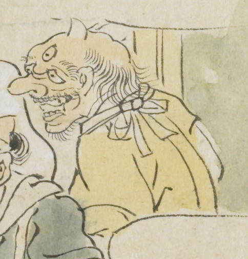

黄色い顔をした一角の鬼。目は垂れており、薄い口髭、顎髭を生やしている。黄色い衣服を身にまとっている。
出典：親書誌：U426_nichibunken_0079：酒天童子絵巻；シュテンドウジエマキ／日付：2006／資源識別子：U426_nichibunken_0079_0007_0001
Copyright (c)2010- International Research Center for Japanese Studies, Kyoto, Japan. All rights reserved.